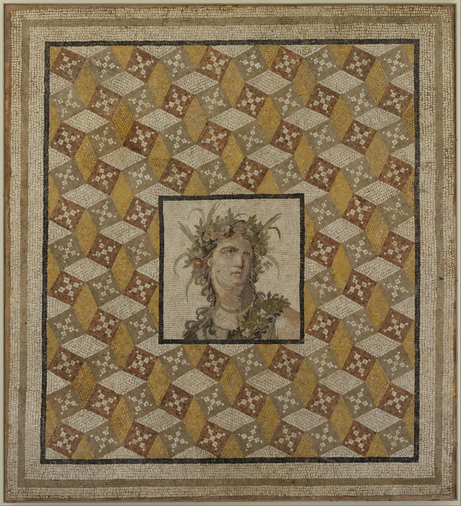
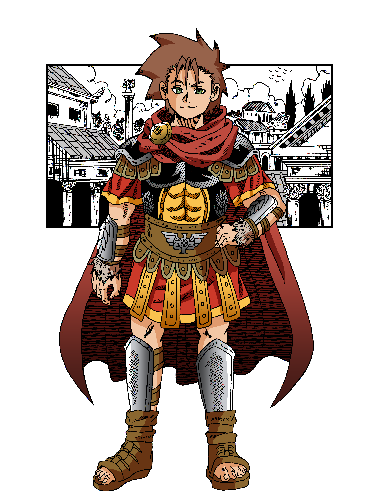

An Ancient Tale of Epic Proportions
The Lucian Republic is the supreme power in the region of Theia. No other culture can match the brilliance and wonders of their cities, art, constructions, philosophy, and of course - their military might. The secret behind their success can be attributed to the legions, defenders of the Republic.
This ultimate fighting force is feared throughout the land. Infused with the Elysium Crystals, they have acquired the power of the gods. Like their legendary founder, Lucius Siderus Artorius, the legions march forth in their holy crusade to spread the light of civilizations. It is only a matter of time before Lucium conquers the whole world.

Follow the story of Velkan Marius Aurelian. Born on a small farm in the rural and distant Ilium Islands, he always dreamed of a life of adventure beyond the shores. One day, a famine grips the countryside and his sister is sold into slavery due to his father's bad debts. Velkan's brother, Sage, joins the legions with the hope of eventually purchasing their sister's freedom. Sadly, he loses his own life on the battlefield.
Bhutaki, a fellow soldier and friend of Sage, adopts Velkan into the illustrious Marius family. Starting his new life in Lucium, the capital city, Velkan learns more of the injustice between the common plebeians and the wealthy patrician class. He decides to aim for the seat of Consul - the highest office in the land - in order to change the society. But before he can do so, he must first prove his worth in the legions. Only then can he climb up the cursus honorum and achieve greatness.
Free Chapter
Check out the very first chapter of Book 1: The Origin for free. Just click the button below and enjoy!

Are You Ready To Join The Legion?

Let us embark on this journey together.